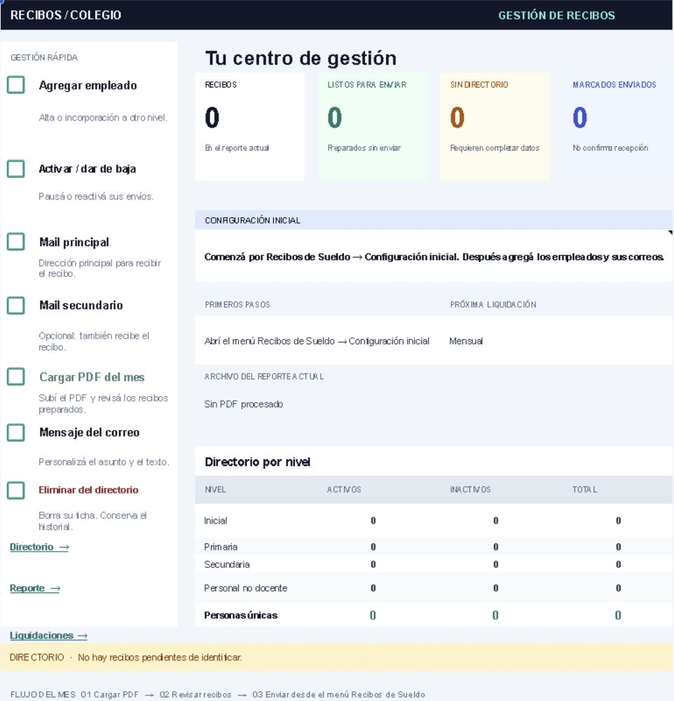

Proyecto principal · Automatización
Gestión y envío de recibos de sueldo
Un proceso completo para un colegio: preparar recibos individuales desde un PDF, revisar personas y destinatarios, confirmar el envío y conservar su historial.
Conocer el sistemaCaptura real de la copia de portfolio, sin datos de empleados.
